<section>
  <div class="body-container">
    <div class="container">
      <h4>Build ETL and Data Analytics pipeline with Spark and AWS Glue</h4>
    </div>
    <div class="container">
      <p class="f3rem mtop-20">In this blog we'll learn how to build a data ETL pipeline with <a
          href="https://spark.apache.org/" target="blank">Apache Spark</a> and <a href="https://aws.amazon.com/glue/"
          target="blank">AWS Glue</a>.
        We have sales transaction data from a retail store with 55 GB in volume and
        23 billion records. Data transformations will be built with pyspark and submitted to fully AWS managed multinode
        spark cluster. Following is the data schema we'll be working with:
      </p>
      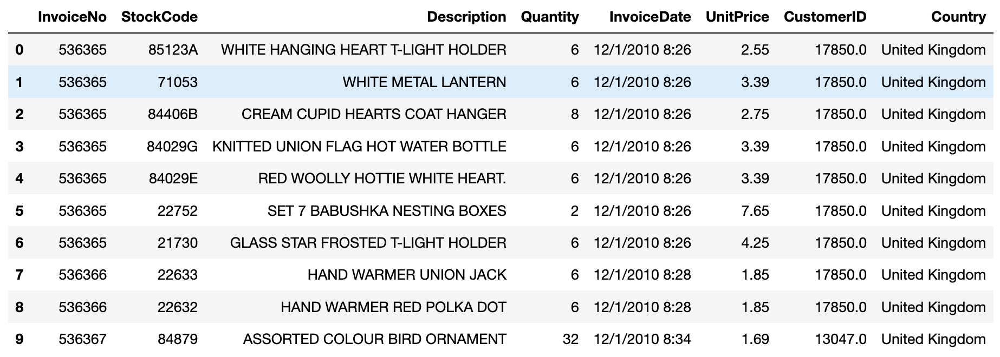
      <h5 class="mtop-20 f3rem">Following are some key analytics requirements that we intend to address:</h5>
      <ul class="ana-list f3rem">
        <li class="ana-item">Top customers w.r.t order quantity and revenues generated</li>
        <li class="ana-item">Sales distrbution across months of year, weeks of year, days of week and hours of day</li>
        <li class="ana-item">Sales distribution across countries w.r.t order quatity and revenue generated</li>
        <li class="ana-item">Sales distribution for volume and revenue across unique and repeat customers</li>
        <li class="ana-item">Sales trends across all the items sold at the retail store</li>
      </ul>
      <h5 class="mtop-10 f3rem">Data sits in a s3 bucket with following details:</h5>
      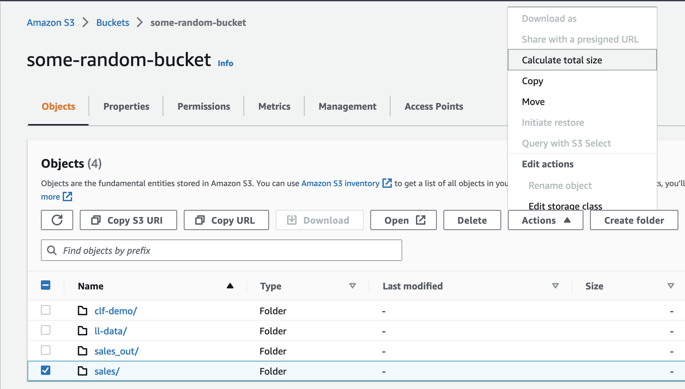
      <p class="top-20 f3rem">Data is loaded to a glue notebook backed by a spark cluster showing following
        stats</p>
      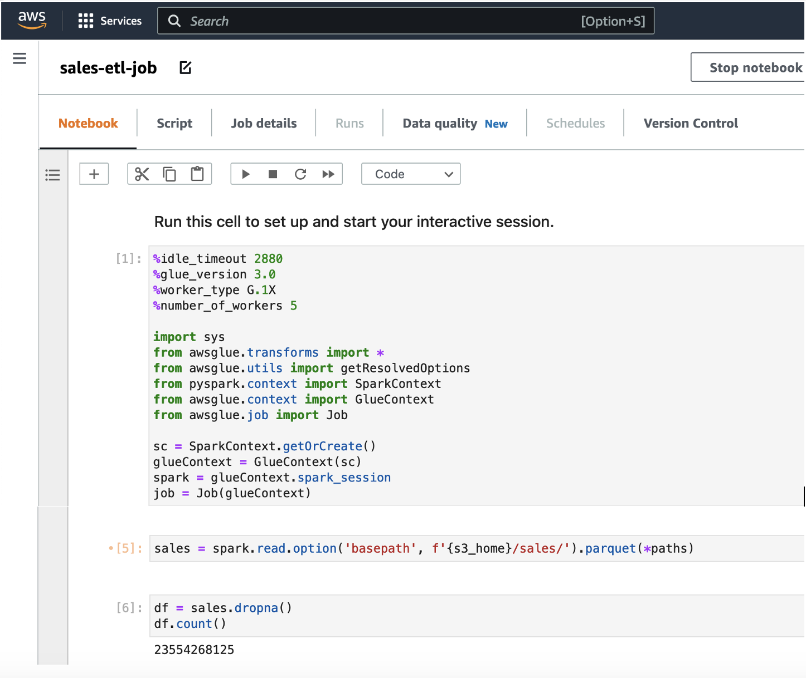
      <p class="top-20 f3rem">Following <a
          href="https://github.com/vandana091181/pyspark-sales-etl/blob/main/sales-etl-job.py" target="blank">pyspark
        </a> script then
        applies all data transformations and aggregations which is then executed inside a pyspark glue ETL job to dump
        the aggregations in a s3 bucket
      </p>
      <pre>
        <code class="glue-code">
          import sys
          from awsglue.transforms import *
          from awsglue.utils import getResolvedOptions
          from pyspark.context import SparkContext
          from awsglue.context import GlueContext
          from awsglue.job import Job
          
          sc = SparkContext.getOrCreate()
          glueContext = GlueContext(sc)
          spark = glueContext.spark_session
          job = Job(glueContext)
          import json, re
          from pyspark.sql import functions as f
          from pyspark.sql import types as T
          s3_dict = json.loads('{"2011": {"7": [20, 18, 27, 11, 29, 28, 17, 10, 19, 26, 21, 7, 8, 1, 6, 24, 15, 12, 13, 14, 22, 25, 3, 4, 31, 5], "9": [20, 18, 27, 11, 29, 16, 28, 19, 26, 21, 7, 9, 8, 1, 6, 23, 15, 12, 13, 14, 22, 25, 4, 30, 5, 2], "8": [18, 11, 16, 28, 17, 10, 19, 26, 21, 7, 9, 8, 1, 24, 23, 15, 12, 14, 22, 25, 3, 4, 31, 30, 5, 2], "1": [20, 18, 27, 11, 16, 28, 17, 10, 19, 26, 21, 7, 9, 6, 24, 23, 12, 13, 14, 25, 4, 31, 30, 5], "6": [20, 27, 29, 16, 28, 17, 10, 19, 26, 21, 7, 9, 8, 1, 6, 24, 23, 15, 12, 13, 14, 22, 3, 30, 5, 2], "11": [20, 18, 27, 11, 29, 16, 28, 17, 10, 21, 7, 9, 8, 1, 6, 24, 23, 15, 13, 14, 22, 25, 3, 4, 30, 2], "10": [20, 18, 27, 11, 16, 28, 17, 10, 19, 26, 21, 7, 9, 6, 24, 23, 12, 13, 14, 25, 3, 4, 31, 30, 5, 2], "3": [20, 18, 27, 11, 29, 16, 28, 17, 10, 21, 7, 9, 8, 1, 6, 24, 23, 15, 13, 14, 22, 25, 3, 4, 31, 30, 2], "4": [20, 18, 27, 11, 28, 17, 10, 19, 26, 21, 7, 8, 1, 6, 15, 12, 13, 14, 3, 4, 5], "5": [20, 18, 27, 11, 29, 16, 17, 10, 19, 26, 9, 8, 1, 6, 24, 23, 15, 12, 13, 22, 25, 3, 4, 31, 5], "2": [20, 18, 27, 11, 16, 28, 17, 10, 21, 7, 9, 8, 1, 6, 24, 23, 15, 13, 14, 22, 25, 3, 4, 2], "12": [7, 9, 8, 1, 6, 4, 5, 2]}, "2010": {"12": [20, 16, 17, 10, 19, 21, 7, 9, 8, 1, 6, 23, 15, 12, 13, 14, 22, 3, 5, 2]}}')
          s3_home = 's3://some-random-bucket'
          years = range(2000, 2002)
          months = range(1, 13)
          days = range(1, 32)
          
          paths = list()
          
          for y in years:
          ykey = "2010" if y % 2 == 0 else "2011"
          for m in months:
        mkey = str(m)
        for d in days:
        if mkey in s3_dict[ykey] and d in s3_dict[ykey][mkey]:
        p = f'{s3_home}/sales2/year={y}/month={m}/day={d}/'
        paths.append(p)
        #print(p)
        sales = spark.read.option('basepath', f'{s3_home}/sales/').parquet(*paths)
        df = sales.dropna()
        df.count()
        df = df.drop('__index_level_0__')
        df.printSchema()
        df = df.filter(f.col('Quantity') > 0) \
        .withColumn('CustomerID', f.col('CustomerID').cast('int')) \
        .withColumn('year', f.year(f.col('InvoiceDate'))) \
        .withColumn('month', f.month(f.col('InvoiceDate'))) \
        .withColumn('day', f.dayofmonth(f.col('InvoiceDate'))) \
        .withColumn('quarter', f.quarter(f.col('InvoiceDate'))) \
        .withColumn('dayofyear', f.date_format(f.col('InvoiceDate'), 'D')) \
        .withColumn('weekofyear', f.weekofyear(f.col('InvoiceDate'))) \
        .withColumn('dayofweek', f.dayofweek(f.col('InvoiceDate'))) \
        .withColumn('TotalSpent', f.col('Quantity') * f.col('UnitPrice')) \
        .withColumn('year', f.col('year').cast(T.StringType())) \
        .withColumn('month', f.col('month').cast(T.StringType())) \
        .withColumn('year_month', f.concat(f.col('year'),f.col('month'))) \
        .withColumn('hour', f.hour(f.col('InvoiceDate'))) \
        
        df.show(2)
        num_sales = df.groupBy('CustomerID', 'Country') \
        .agg(f.count('InvoiceNo').alias('NumberOfSales'),
        (f.sum('TotalSpent').alias('AmountSpent'))
        )
        
        num_sales.show()
        def get_invoice_for_col(df, col, calias):
        inv_c = df.groupBy(col) \
        .agg(f.countDistinct('InvoiceNo').alias(calias)) \
        .orderBy(col)
        return inv_c
        
        # (f.countDistinct('dayofweek').alias('dayofweek')), \
        # (f.countDistinct('hour').alias('hour')), \
        # (f.countDistinct('weekofyear').alias('weekofyear')))
        
        inv_ym = get_invoice_for_col(df, 'month', 'year_month')
        inv_dow = get_invoice_for_col(df, 'dayofweek', 'dayofweek')
        inv_hr = get_invoice_for_col(df, 'hour', 'hour')
        inv_woy = get_invoice_for_col(df, 'weekofyear', 'weekofyear')
        
        inv_ym.show()  
        inv_dow.show()                                                   
        inv_hr.show()                                                   
        inv_woy.show()                                                   
        
        
        cont = df.groupBy('Country').agg( \
(f.count(f.col('InvoiceDate'))).alias('CountrySales'), \
(f.sum(f.col('InvoiceDate'))).alias('CountryAmounnt'), \
)

cont.show()
inv_c = df.groupBy('InvoiceNo', 'InvoiceDate', 'year', 'month').agg(
  (f.sum(f.col('TotalSpent')).alias('AmountSpent')),
  (f.max(f.col('CustomerID')).alias('CustomerID')),
  (f.max(f.col('Country')).alias('Country')),
  )
  inv_c.show(5)
  urc_m = inv_c.groupBy('year', 'month', 'CustomerID').count().filter(f.col('count') > 1)\
  .groupBy('year', 'month').agg(f.countDistinct(f.col('CustomerID')).alias('CustomerID'))\
  .orderBy((f.col('year')), (f.col('month')))
  urc_m.show()
  uc_m = df.groupBy('year', 'month')\
  .agg(f.countDistinct(f.col('CustomerID')).alias('UCustomerID'))
  uc_m.show()
  cust = urc_m.join(uc_m, ['year', 'month'], 'inner')
  cust.show()
  rpc = f.round(f.col('CustomerID') / f.col('UCustomerID'), 4) * 100
  cust = cust.withColumn('repeat_pct', rpc)
  cust.show()
  
  print('\nCUSTOMER COUNT DONE\n')
  rev_m = df.groupby('year', 'month')\
  .agg(f.sum(f.col('TotalSpent')).alias('MonthlySpent'))\
  .orderBy(f.col('year'), f.col('month'))
  rev_m.show()
  crev_m = inv_c.groupby('CustomerID', 'year', 'month')\
  .agg(
    f.sum('AmountSpent').alias('AmountSpent'), \
    f.count('CustomerID').alias('visit'))\
    .filter('visit > 1')\
    .groupby('year', 'month')\
    .agg(f.sum('AmountSpent').alias('AmountSpent'))
    crev_m.show()
    rev = rev_m.join(crev_m, ['year', 'month'])
    rpc = f.round(f.col('AmountSpent') / f.col('MonthlySpent'), 4) * 100
    rev = rev.withColumn('repeat_pct', rpc)\
    .orderBy(f.col('year'), f.col('month'))
    rev.show()
    print('\nALL DONE !!!\n')
    cust \
    .write.format("com.databricks.spark.csv") \
    .option("header", "true") \
    .parquet(f'{s3_home}/sales_out/repeat/cust_count/') 
    
    rev \
    .write.format("com.databricks.spark.csv") \
    .option("header", "true") \
    .parquet(f'{s3_home}/sales_out/repeat/cust_amount/') 
    c1 = cust.toPandas()
    c2 = rev.toPandas()
    
    def save_df_csv(dfp, s3p):
    c = dfp.toPandas()
    c.to_csv(f'{s3_home}/sales_out/{s3p}', index=False)
    save_df_csv(num_sales, 'num_sales.csv')
    save_df_csv(inv, 'inv_ym_dow_hr_woy.csv')
    save_df_csv(cont, 'contry_sales_amount.csv')
    
    save_df_csv(inv_ym, 'orders_ym.csv')
    save_df_csv(inv_dow, 'orders_dow.csv')
    save_df_csv(inv_hr, 'orders_hr.csv')
    save_df_csv(inv_woy, 'orders_woy.csv')
    
    save_df_csv(cust, 'cust_count.csv')
    save_df_csv(rev, 'cust_rev.csv')
    job.commit()
  </code>
      </pre>
      <p class="top-20 f3rem">Glue job creates a 5 node spark cluster with G1.x instance type (4 vCPU, 16 GB RAM and 64
        GB disk) and max capacity of 5
        DPUs. Cluster runs for 4+ hours to process the data transormations and aggregates them to s3</p>
      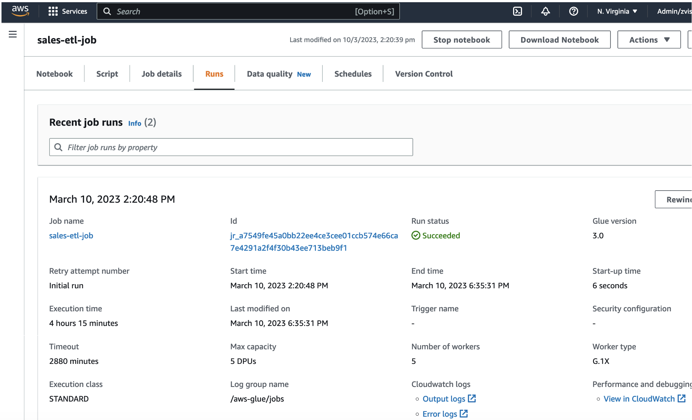
      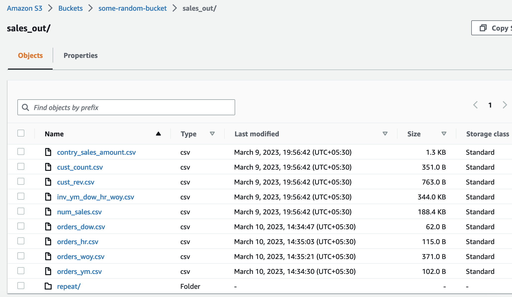
      <p class="top-20 f3rem">With aggregations in place we can now answer the analytics and reporting queries as
        follows. Python pandas is used to build following visualizations but any BI tool of choice can used to build
        them</p>
      <div class="top-20">
        <h5 class="f3rem">Top customers w.r.t order quantity and revenues generated</h5>
        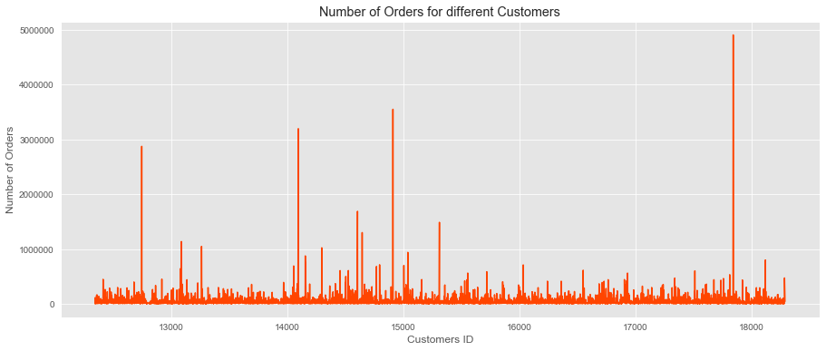
        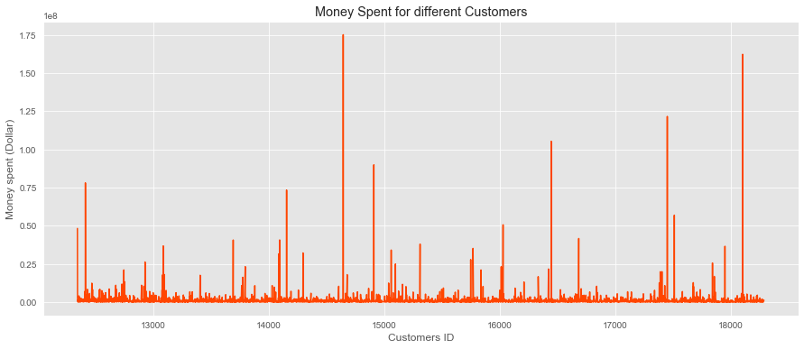
        <h5 class="f3rem">Sales distrbution across months of year, weeks of year, days of week and hours of day</h5>
        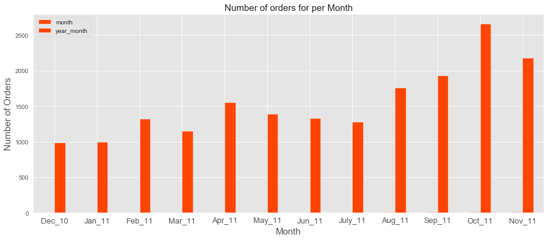
        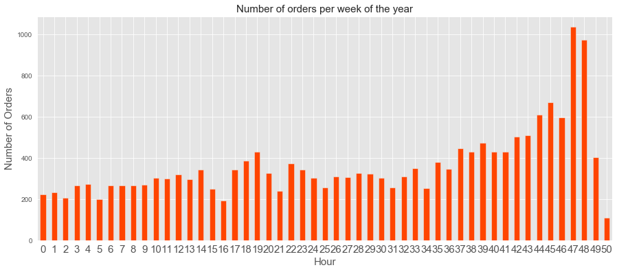
        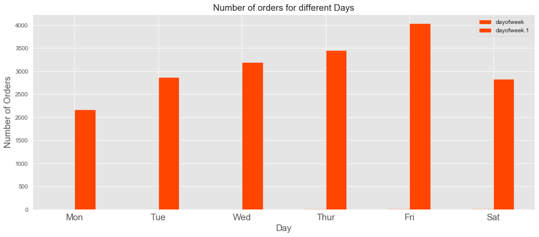
        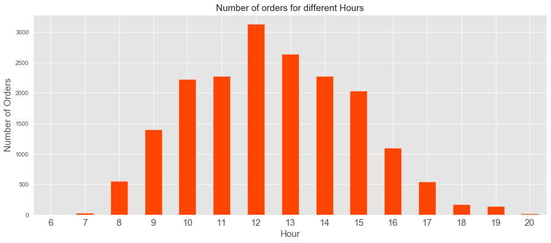
        <h5 class="f3rem">Sales distribution across countries w.r.t order quatity and revenue generated</h5>
        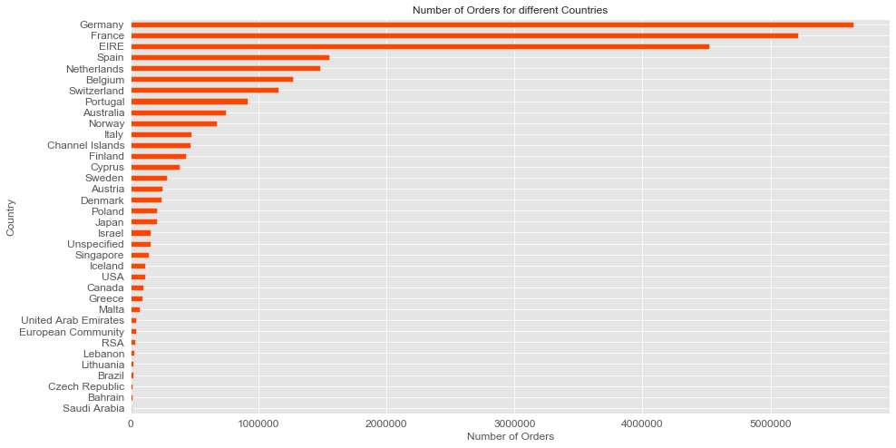
        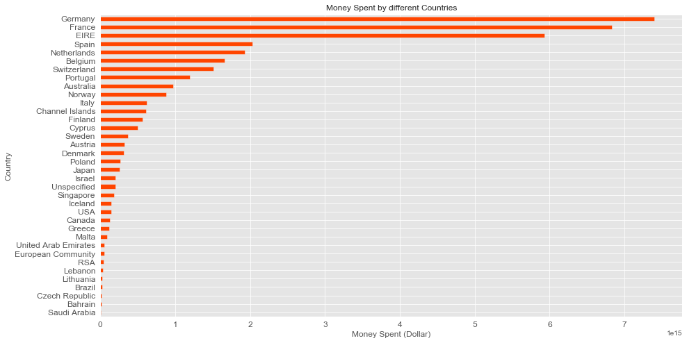
        <h5 class="f3rem">Sales distribution for volume and revenue across unique and repeat customers</h5>
        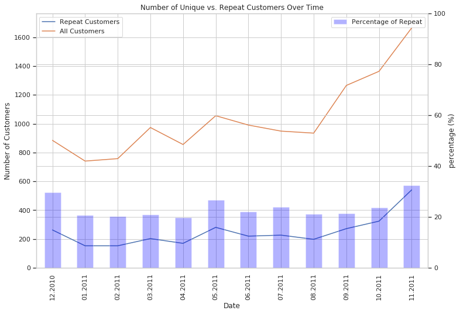
        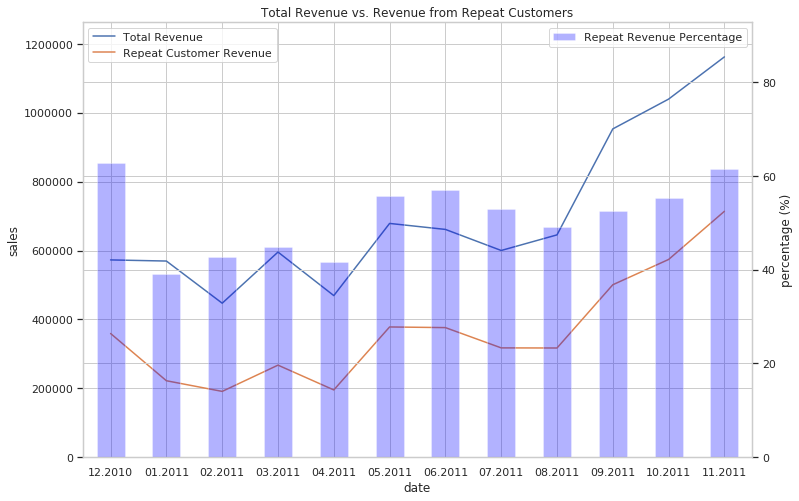
        <h5 class="f3rem">Sales trends across all the items sold at the retail store</h5>
        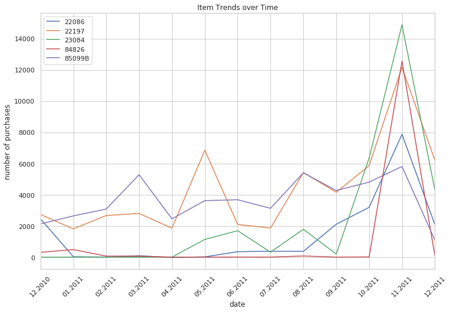
        <h4 class="f3rem mtop-20">
          Conclusion:
        </h4>
        <p class="f3rem mtop-10">In this article we built a strategy to process annd analyze the data at scale, could
          platforms and open source technologies helps us to focus on our needs eliminating the need to maintain
          dedicated infrastrucure. Cloud managed services like AWS Glue, S3 etc makes it easy to provision and scale
          clusters to handle any amount of data and enables users to "pay as you use" billing model
      </div>
    </div>
  </div>
</section>